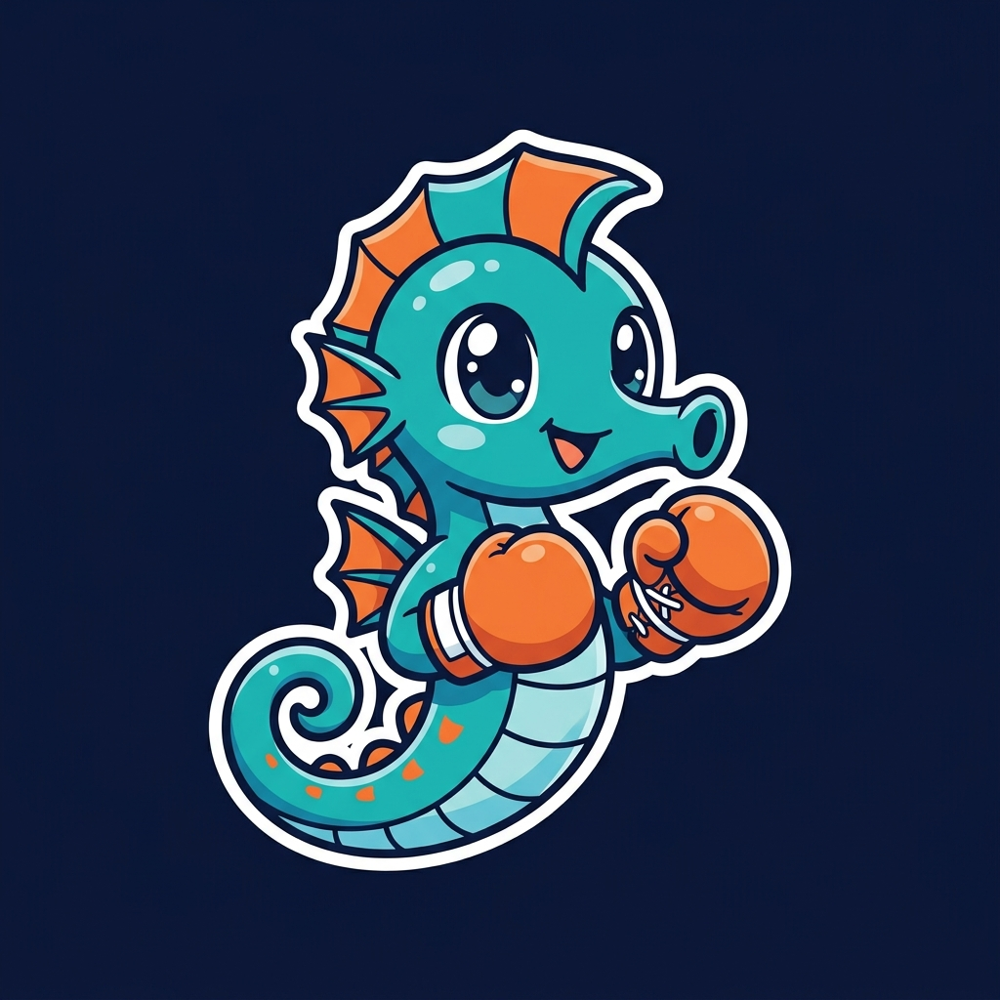

A free-to-play prediction season on Sui — powered by DeepBook Predict, zkLogin and Sponsored Transactions.
Sign-in → first pick in under 30 secondsInstall a wallet, bridge assets, buy gas — all before the first pick. Casual fans give up.
DeepBook Predict needs steady flow across every strike & expiry to mature its SVI surface. Bots only touch the liquid few.
SocialFi apps die without real gameplay or retention — pure token speculation isn't a loop.
Sign in with Google via zkLogin. No seed phrase. A Sui address & PredictManager are derived in seconds.
First 10 picks free — gas & faucet dUSDC sponsored via Sui Sponsored Transactions.
Every pick fires a real predict::mint against the DeepBook CLOB. The whole leaderboard is auditable on-chain.
Continue with Google. zkLogin address + PredictManager + profile, gas sponsored.
Live BTC markets read off-chain. Real predict::mint; stake = true balance delta.
Permissionless settle. Seahorse Badge NFT mutates Bronze → Silver → Gold in place.
Every step is real, on-chain and auditable — no backend custody key, no hidden database.
Direct predict::mint / redeem for authentic CLOB settlement.
OAuth onboarding with gas abstracted away for retail.
In-place NFT badge upgrades; up to 50 follower copies batched atomically.
Follow a KOL leader; their pick mirrors to every follower in one batched PTB (up to 50 copies, atomic). One good predictor becomes liquidity across the book.
Every casual pick is genuine volume spread across strikes & expiries — exactly the long-tail flow DeepBook's volatility surface needs.
IppoStreak isn't just a game on top of DeepBook — it feeds it.
Zero-friction onboarding · real on-chain settlement · a flywheel for liquidity.
Thank you — let's predict 🥊